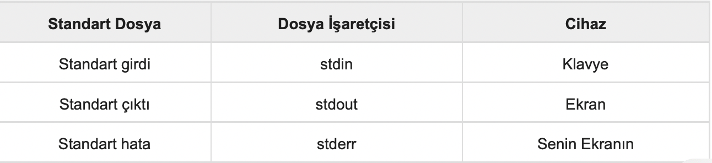

C Öğreticisi 19 (Girdi ve Çıktı)
Bu yazılar https://www.tutorialspoint.com/cprogramming/ adresindeki yazı dizilerinin çevirileridir.
Girdi dediğimizde bu programa bir veri alışı anlamına gelir. Girdi bir dosya biçimi olabileceği gibi komut satırından da alınabilir. C programlama gerektiğinde girdiyi okumak ve programda kullanmak için gereklilikleri sağlar.
Çıktı dediğimizde bu ekranda gözüken bir veri anlamına gelir, yazıcı veya herhangi bir dosya. C programlama bilgisayar ekranında göstermek veya metin/ikili dosya biçimde saklamak için gereklilikleri sağlar.
Standart Dosyalar
C programlama tüm cihazlara dosyalar olarak davranır. Böylece ekran gibi cihazlar dosyalarla aynı şekilde ele alınır ve bir program yürütüldüğünde, klavyeye ve ekrana erişim sağlamak için aşağıdaki üç dosya otomatik olarak açılır.
Dosya işaretçileri, okuma ve yazma amacıyla dosyaya erişmenin yoludur. Bu bölümde, değerlerin ekrandan nasıl okunacağı ve sonucun ekranda nasıl yazdırılacağı açıklanmaktadır.
getchar() ve putchar() Fonksiyonları
int getchar(void) fonksiyonu bir sonraki kullanılabilir karakteri ekrandan okur ve bir tamsayı olarak döndürür. Bu fonksiyon bir kerede sadece bir karakter okur. Ekrandan birden fazla karakter okumak istemeniz durumunda döngüde bu yöntemi kullanabilirsiniz.
int putchar(int c) fonksiyonu iletilen karakteri ekrana koyar ve aynı karakteri döndürür. Bu fonksiyon bir kerede sadece bir karakter koyar. Ekranda birden fazla karakter görüntülemek istemeniz durumunda döngüde bu yöntemi kullanabilirsiniz. Aşağıdaki örneği kontrol edin -
#include
int main( ) {
int c;
printf( “Deger girin:”);
c = getchar( );
printf( “\nSunu girdiniz: “);
putchar( c );
return 0;
}
Yukarıdak, kod derlenip çalıştırıldığında, metin girmenizi bekler. Bir metin girip enter tuşuna bastığınızda, program ilerler ve sadece bir karakteri okur şöyle gözükür -
$./a.out
Deger girin : bu bir denemedir
Sunu girdiniz: b
gets() ve puts() Fonksiyonları
Char * gets (char * s) fonksiyonu, bir son satırsonu veya EOF(End of File) (Dosya Sonu) olana kadar, stdin’den arabelleğe s ile gösterilen bir satırı okur.
int puts (const char * s) fonksiyonu stdout’a ‘s’ ve ‘a’ sondaki yeni satırını yazar.
NOT: gets() fonksiyonu kullanmaktan kaldırılmış olsa da, gets kullanmak yerine fgets() kullanmak mümkündür.
#include
int main( ) {
char str[100];
printf( “Deger girin :”);
gets( str );
printf( “\nSunu girdiniz: “);
puts( str );
return 0;
}
Yukarıdaki kod derlendiğinde ve çalıştırıldığında metin girmenizi bekler. Bir metin girip enter tuşuna bastığınızda, program devam eder ve sonuna kadar tüm satırı okur ve aşağıdaki gibi görüntülenir -
$./a.out
Deger girin : bu bir denemedir
Sunu girdiniz: bu bir denemedir
scanf() ve printf() Fonksiyonları
int scanf (const char * format, …) fonksiyonu standart giriş akışı stdin’den girişi okur ve bu girdiyi formata göre tarar.
int printf (const char * format, …) fonksiyonu, çıktıyı standart çıktı akışı stdout’una yazar ve çıktıyı formata göre üretir.
-Format(biçim) basit bir sabit dize olabilir, ancak sırasıyla dizeleri, tamsayı, karakter veya float yazdırmak veya okumak için % s,% d,% c,% f vb. ile belirtebilirsiniz. Gereksinimlere göre kullanılabilecek başka birçok biçimlendirme seçeneği vardır. Şimdi kavramları daha iyi anlamak için basit bir örnekle devam edelim -
#include
int main( ) {
char str[100];
int i;
printf( “Deger girin :”);
scanf(“%s %d”, str, &i);
printf( “\nSunu girdiniz %s %d “, str, i);
return 0;
}
Yukarıdaki kod derlendiğinde ve çalıştırıldığında, metin girmenizi bekler. Bir metin girip enter tuşuna bastığınızda, program ilerler ve girişi okur ve aşağıdaki gibi görüntüler -
$./a.out
Deger girin : yedi 7
Sunu girdiniz: yedi 7
Burada, scanf() öğesinin, %s ve %d formatlarında girdi beklediğine dikkat edilmelidir; bu “dize tamsayı” gibi geçerli girdiler sağlamanız gerektiği anlamına gelir. Eğer “string string” değer ya da “integer integer” değer yazarsanız, yanlış girdi olarak kabul edilir. İkincisi, bir dizeyi okurken, scanf() bir boşlukla karşılaşır okumayı bırakır, bu nedenle “bu bir denemedir” scanf() için üç dizedir.
https://www.tutorialspoint.com/cprogramming/c_input_output.htm